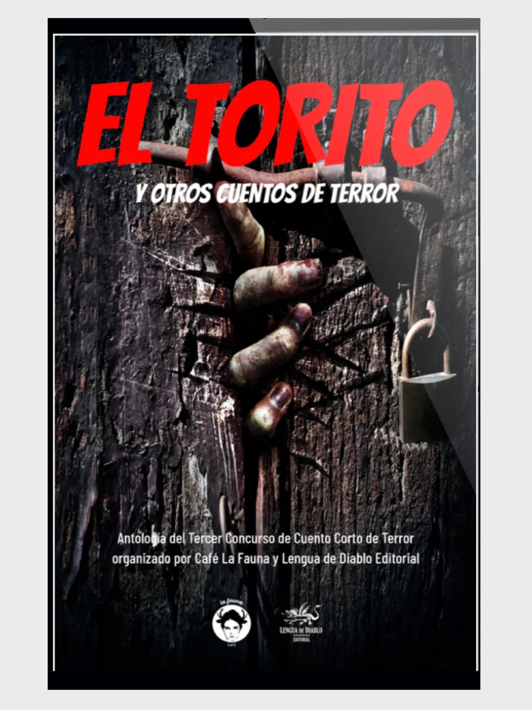
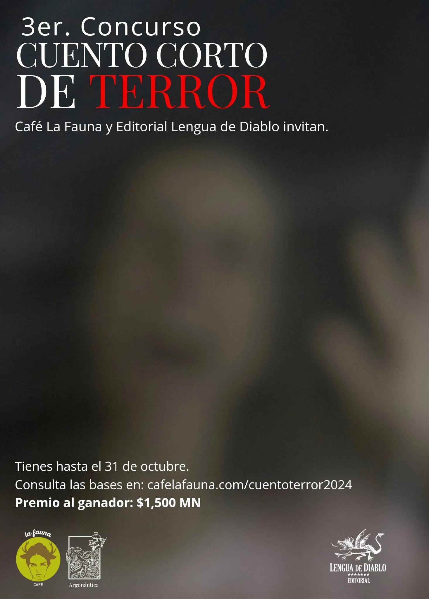

El Torito y Otros Cuentos de Terror (La Elección del Lector)

Elegir un cuento ganador en un concurso es una tarea complicada. El jurado debe seleccionar el cuento que, a su criterio, sea el mejor para recibir el premio. Eso significa elegir entre otras buenas historias. En esta edición el cuento ganador fue “El Torito”, de Adriana Letechipía, adicional a ello, tomando en cuenta a los lectores, creamos esta sección en la que un lector asiduo elige un cuento distinto al ganador como “la elección del lector”, que este concurso corresponde al cuento “Los de afuera” de Edith Esquivel Eguiguren.
El cuento fue seleccionado por Luisa Guadarrama, lectora asidua, donadora de libros y visitante de Argonáutica.
En palabras de Luisa:
“Los de afuera es una historia intrigante que me remontó un poco a la autora Amparo Dávila y su forma para plasmar el “terror” en lo cotidiano. La trama sigue a un hombre que poco a poco se ve envuelto en un espiral de miedo e inseguridad sin ningún motivo aparente y explora el deterioro mental que va sucediendo gradualmente a partir de una creencia.
La historia me pareció interesante porque considero que no hay nada más “terrorífico” que estar atrapado en tus propios pensamientos y creencias, porque sé que el desgaste mental y emocional se vuelve real. Me llamó la atención cómo sucede el cambio del personaje principal, cómo cambian sus relaciones, actividades, dinámicas e incluso ideas, pude sentir la transformación de la cordura en delirio.
Es un cuento que me logró conectar con una de mis reflexiones más frecuentes acerca de lo “frágil” que puede llegar a ser la mente, creo que sólo necesita el estímulo adecuado para estar del otro lado del límite. Lo recomiendo a aquellas personas que al igual que yo disfrutan del terror psicológico, de la angustia que habita sólo en nuestra mente y de lo solitario que eso puede llegar a ser.”
Te invito a leerlo:
Los de afuera
Edith Esquivel Eguiguren
Una bala brilló entre la tierra de su jardín. “Con la inseguridad como está, no podemos tomar esto a la ligera”, le dijo Ramón al presidente del comité de vecinos por teléfono cinco minutos después. El fraccionamiento tenía mucho personal de servicio: ocho guardias, un alberquero y una cuadrilla de jardineros. Todos llevaban buen tiempo trabajando para los 300 dueños de propiedades en el conjunto habitacional, menos uno, Emir, el jardinero nuevo. Su presencia era imposible de ignorar debido a sus 190 centímetros de estatura.
A Ramón le daba especial resquemor que Emir viviera en una de las casas de afuera, porque para él afuera era feo, adentro bonito; afuera peligroso, adentro seguro; afuera “ve tú a saber quién es esa gente”, y adentro “la renta de aquí no la paga cualquiera”.
La bala estaba trastocando la frágil sensación de seguridad de Ramón y no sabía qué hacer para restablecerla. En su juventud intentó seguir el catolicismo, el budismo y el taoísmo para calmar los nervios, pero nada le había resultado. Solamente el dinero le ayudó a apaciguar la mayor parte de sus ansiedades, aunque el proyectil hallado en su propiedad lo volvió a hacer sentir tan vulnerable como cuando un ladrón le quitó sus tenis nuevos a punta de pistola en la preparatoria.
Para reconfortarlo, a Laura, su mujer, se le ocurrió pedirle al nuevo jardinero una constancia de no tener antecedentes penales. El presidente del comité estuvo de acuerdo con la iniciativa en un principio, pero cambió de opinión cuando vio que la encomienda resultaría muy costosa. Habría que pagarle a Emir el día sin trabajar y los taxis, porque no pasaba el transporte público a las cuatro de la mañana y desde las 5 debía formarse para alcanzar ficha. Por si fuera poco, una semana después habría que pagarle otra vez el día libre para que fuera a recoger la constancia.
Laura fue inflexible: “Pues que el jardinero pague los gastos si es que quiere trabajar”. La tesorera del comité le explicó que por ese sueldo y sin prestaciones, costaba trabajo encontrar personal para ocupar el puesto. Ramón entonces convenció al presidente de seguir con el proceso ofreciéndose a cubrir todos los gastos, que equivalían a tres semanas de sueldo del jardinero y a tres días de rendimientos financieros de Ramón. “La seguridad no tiene precio”, le dijo a su esposa, y ella aceptó el desembolso con renuencia.
Pasaron dos semanas para que al fin tuviera Ramón la constancia en sus manos. Para entonces había estado buscando estadísticas en internet: El 98% de los delitos nunca se resuelven. Ese papel no le dio tranquilidad. Además, el viacrucis burocrático le había cambiado el semblante a Emir. Le parecía que miraba rencoroso hacia su casa cada vez que pasaba por enfrente. Quizás le había molestado la desconfianza ¡Pero cómo quería que confiara en él si era nuevo! ¡Y vivía afuera! Ahora que Emir conocía el condominio por dentro ¿no tendría resentimiento al comparar esas propiedades con su casuchita de lámina?
Durante la siguiente asamblea de vecinos, Ramón externó su preocupación por la bala. La mujer más antigua del vecindario tomó la palabra para recordarle que muchos vecinos practicaban tiro al blanco como deporte, y en más de una ocasión habían exhibido con descaro sus armas por la calle. Incluso multaron a un condómino por practicar con rifles de postas desde su balcón. “Sí, pero esto es diferente”, dijo Ramón. “Es una bala en la tierra y hay un jardinero nuevo”. Lo cierto es que nadie podía saber a ciencia cierta de dónde provenía la famosa bala, y a nadie le preocupaba como a Ramón.
Ahora que la mirada de Emir echaba chispas, el asunto le producía una angustia más profunda. El jardinero nuevo era su primer pensamiento por la mañana y el último de la noche. Sin embargo, en la asamblea desestimaron sus preocupaciones: “Ya tienes tu constancia. No hay nada más que hacer”. Ramón estaba solo en esto. Incluso Laura había dejado de responder a ese tema cuando su esposo lo mencionaba. Entonces apaciguó la angustia con gas pimienta para su esposa y un revólver calibre .22 para él. Mandó instalar un moderno y costoso sistema de alarma y sustituyó la chapa de su puerta por tres cerraduras electrónicas: una de tarjeta, otra de reconocimiento de voz y una más de reconocimiento facial. Sin embargo, como estaba prohibido amurallar los jardines privados de las casas en el condominio, ese territorio seguía a merced de Emir.
Su esposa sugirió ofrecerle un pago al jardinero para que se buscara trabajo en otro lado. Él dudó al principio, pero al final accedió. Se armó de valor y se acercó a ofrecerle a Emir un vaso de agua mientras podaba sus rosas. Después de mostrarle la chequera, el jardinero se quedó mirándolo unos segundos desde su gran estatura, impasible. No respondió a su oferta y siguió recortando las ramas, esta vez aplicando una fuerza innecesaria a las tijeras. A partir de ese día, Ramón se sintió enloquecer de miedo.
Al salir del condominio en su auto de lujo, siempre miraba el retrovisor para cerciorarse de que no lo estuvieran siguiendo. Cambió sus clases de cerámica por lecciones de tiro defensivo. Evitó salir del fraccionamiento cuando la esposa de Emir iba por los niños a la escuela. ¡Ah!, porque Ramón contrató a un investigador para saber todo sobre el nuevo jardinero: su familia, sus amigos, sus trabajos anteriores y sus horarios. El detective le dijo que no era una persona violenta. Era pobre y nada más, pero esto no lo tranquilizó. “Un antecedente es el pasado y no te dice el futuro”, le decía a Laura, quien cada vez estaba más aburrida con la nueva obsesión de su marido.
A Ramón le parecía que Emir lo estaba atormentando a propósito. Últimamente le había dado por escupir al piso cada vez que se topaban en la calle. Notaba resentimiento en sus ojos, seguramente por su diferencia de nivel social. ¡Pero Ramón había trabajado tan duro para llegar adonde estaba! “La gente de allá afuera no sabe por todo lo que pasamos la gente de adentro”, pensaba en voz alta a la hora del baño matinal.
Tal vez la mirada del jardinero podía malinterpretarse, pero a Ramón le estaban pasando otras cosas más concretas. Un día le robaron el aspersor de su jardín y le dio mucho coraje. Se suponía que esas cosas no debían pasar adentro, y antes de Emir no pasaban. Quiso que revisaran las cámaras, sin embargo, eso requeriría muchas horas y el jefe de vigilancia consideraba que un aspersor de plástico no lo valía. Enojado, Ramón instaló su propia cámara apuntando al jardín, aunque sólo podía grabar en días soleados y se apagaba automáticamente cada vez que amenazaba tormenta. Por desgracia, recién había comenzado la temporada de lluvias.
Ramón empezó a dormir mal. Por las noches escuchaba una podadora, estaba seguro, pero si se asomaba por la ventana, no veía nada. Una mañana descubrió todas sus rosas trozadas, aunque según el jefe de mantenimiento esa semana no había trabajado personal en su jardín: incluso le mostró la bitácora. Cada vez que escuchaba a los jardineros se le ponían los pelos de punta. Se imaginaba a Emir entre ellos, lanzando miradas como balas hacia su casa.
Una tarde le dio la impresión de que olía a mortandad cerca de la bugambilia, que parecía rodeada por cientos de moscas panteoneras. Pero al acercarse a la planta, todo se veía normal. Cuando se lo dijo a Laura, ella le advirtió que estaba harta y no quería que volvieran a hablar de nada que tuviera que ver con el jardín o con Emir. Por eso, aunque siguió viendo cosas extrañas, ya no tenía a quién contárselo.
Todos los días debía barrer a cientos de gusanos de tierra retorciéndose en el patio. Una noche se encontró muertas en el suelo todas las flores de su árbol. Era como si alguien hubiera trepado hasta a las ramas más altas y quebradizas con el único propósito de quitarles la belleza. De vez en cuando hallaba serpientes destripadas en la entrada de su casa, y poco después lo sorprendieron cientos de caracoles aplastados y colocados en espiral alrededor de la silla del jardín donde solía sentarse a tomar el fresco de la tarde. Para colmo, durante las madrugadas, un búho le espantaba el sueño con su ulular agonizante. Había estado leyendo en internet y todo lo que le pasaba coincidía con un embrujo. Muy a pesar suyo empezó a creer en lo paranormal. Estaba seguro de que alguien le había echado a su jardín tierra de panteón.
Desgastado por el insomnio, acudió al doctor para que le prescribiera algo. Ramón tomó unas pastillas que lo tuvieron una semana durmiendo casi todo el tiempo. Para cuando se le pasó el efecto de los fármacos, su esposa le anunció que se iría un tiempo a casa de su hermana. Él estuvo de acuerdo. Laura le estorbaba para lo que quería hacer. Su primera noche sin su esposa la pasó en vela, vigilando el jardín junto a la ventana. Lo vio en la espesura de la madrugada, iluminada por los rayos de tormenta derritiendo el cielo.
Vestía ropa oscura y era alto. Traía capucha, pero donde debía estar el rostro sólo percibía una oscuridad más profunda que la noche. Se movía con una lentitud inquieta, como si flotara sobre lava, y de su cuerpo se desprendía una especie de niebla. Con brazos largos y delgados lanzaba tierra al pasto, y a su paso quedaba una estela de ciempiés rojos como la sangre.
Por la hora y las proporciones de la silueta, estimó que no podía ser un humano. Sintió que su estómago y lengua se apretaban. Se le helaron las manos y sus piernas se volvieron lentas para responder. Notó que las hojas tiradas en el suelo se abrían y cerraban de manera antinatural, como si fueran almejas nerviosas en el mar.
Ramón fue rápido por su revólver. Le metió la bala que encontró en el jardín, porque alguien en la asamblea de vecinos le hizo notar que tenía una cruz en la punta. “Es efectiva para dispararle a fantasmas y entes diabólicos”. Se había reído de ese vecino supersticioso en su cara, pero hoy era un hombre muy distinto, un creyente de lo ultraterreno. Estaba seguro de que Emir había ido con un brujo malo para echarle mal de ojo. “Todo eso se acabará ya mismo”, pensó. Abrió la puerta y disparó al espectro. Una parvada de golondrinas batió las alas en huida y se encendieron las luces de varias casas.
Ramón se veía satisfecho en la foto policial. Había acabado con el espíritu maligno e ignoraba a quienes le dijeran lo contrario. La vida sería dura en la cárcel, aunque no tan dura como la existencia maldita que estaba sufriendo a merced de la brujería del jardinero nuevo. El día del juicio, la esposa y los hijos de Emir lo llamaron asesino entre lágrimas, pero Ramón siguió imperturbable: “La gente de allá afuera no sabe por todo lo que pasamos la gente de adentro”, pensó.
La Lectora:

Luisa Guadarrama
Psicóloga de profesión, practicante de yoga, amante de los libros. Viajera incansable en búsqueda de buenos momentos y paz espiritual. Le gusta el deporte y disfruta la compañía de sus perros. Le encanta probar nuevas comidas y conocer nuevos sitios. Visitante asidua de nuestra sala de lectura, Argonáutica.
Realizamos el concurso en conjunto con Lengua de Diablo, editorial independiente que publica textos fantásticos, de ciencia ficción y, por supuesto, de terror.

Descarga la publicación con cuentos seleccionados y ganador del concurso en:
lenguadediablo.com/eltorito
Visita Café La Fauna y encuentra comida, café y libros.